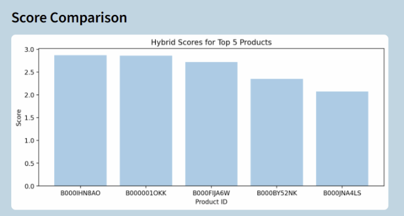
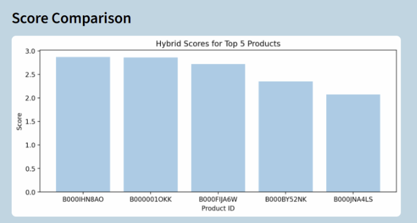
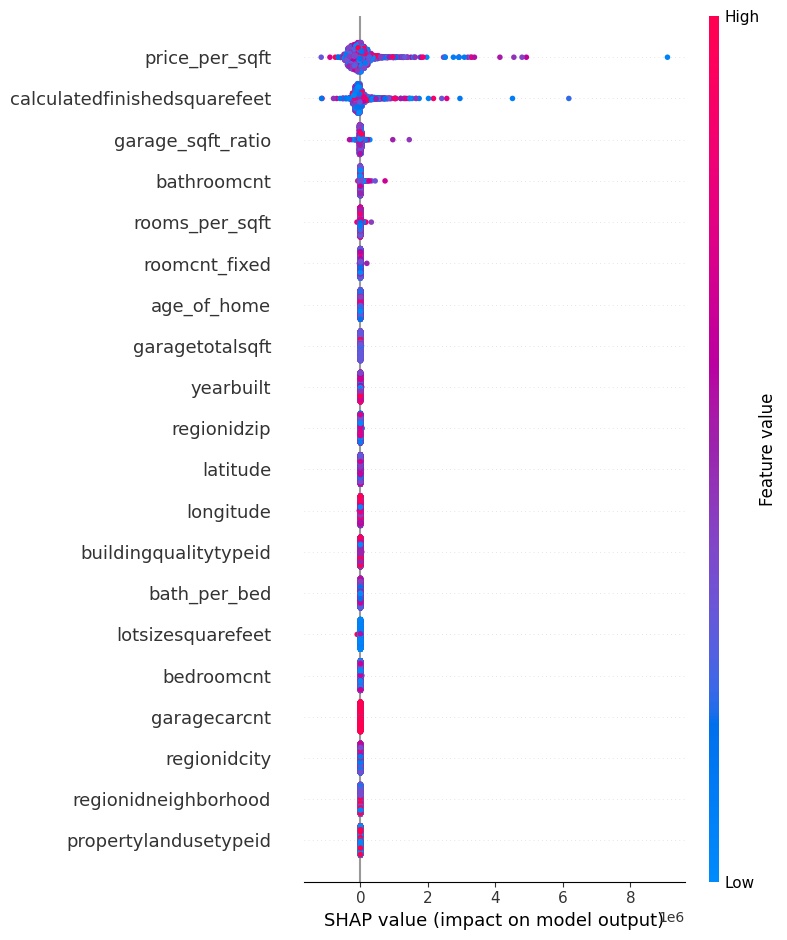
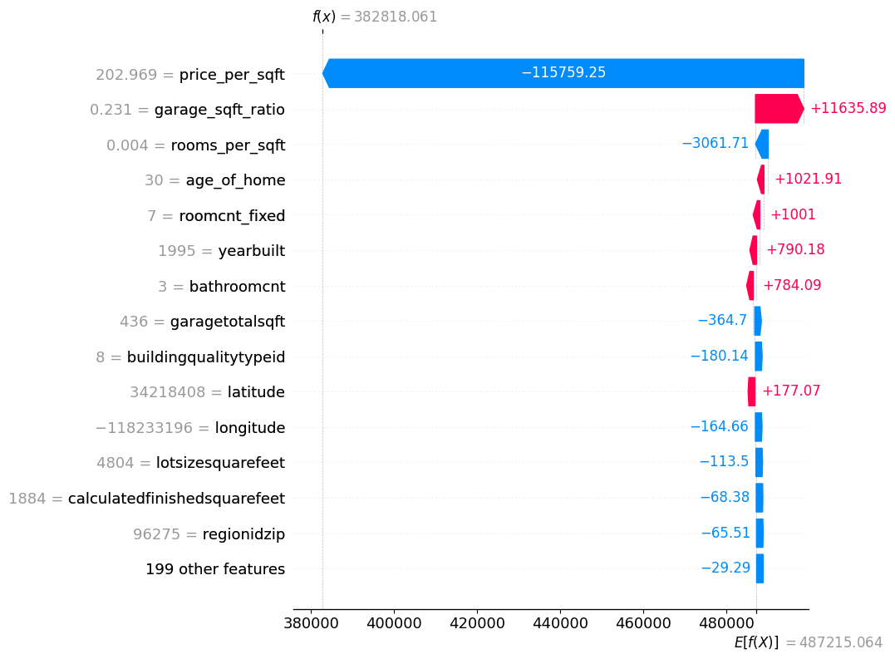
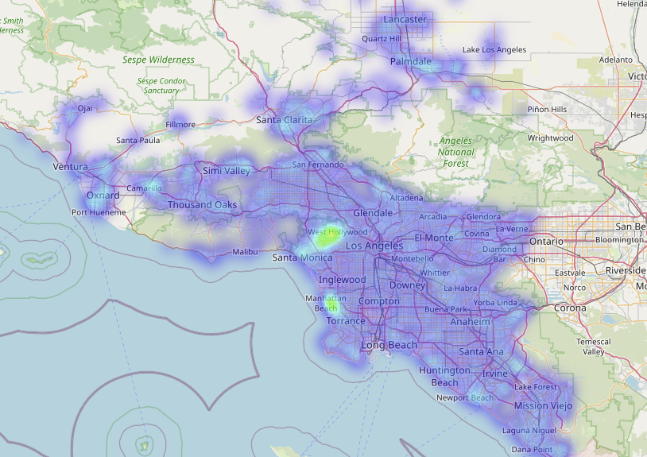
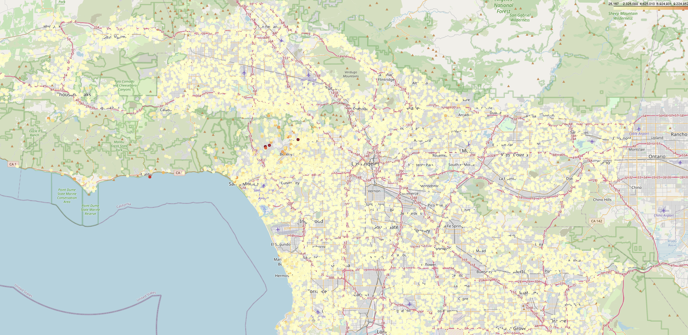
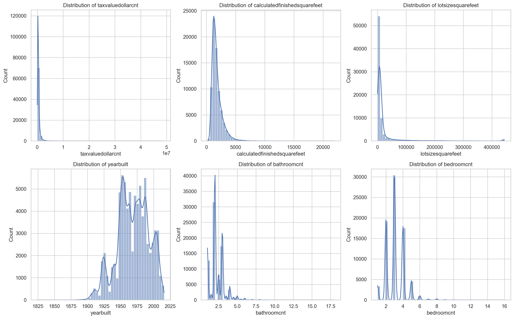
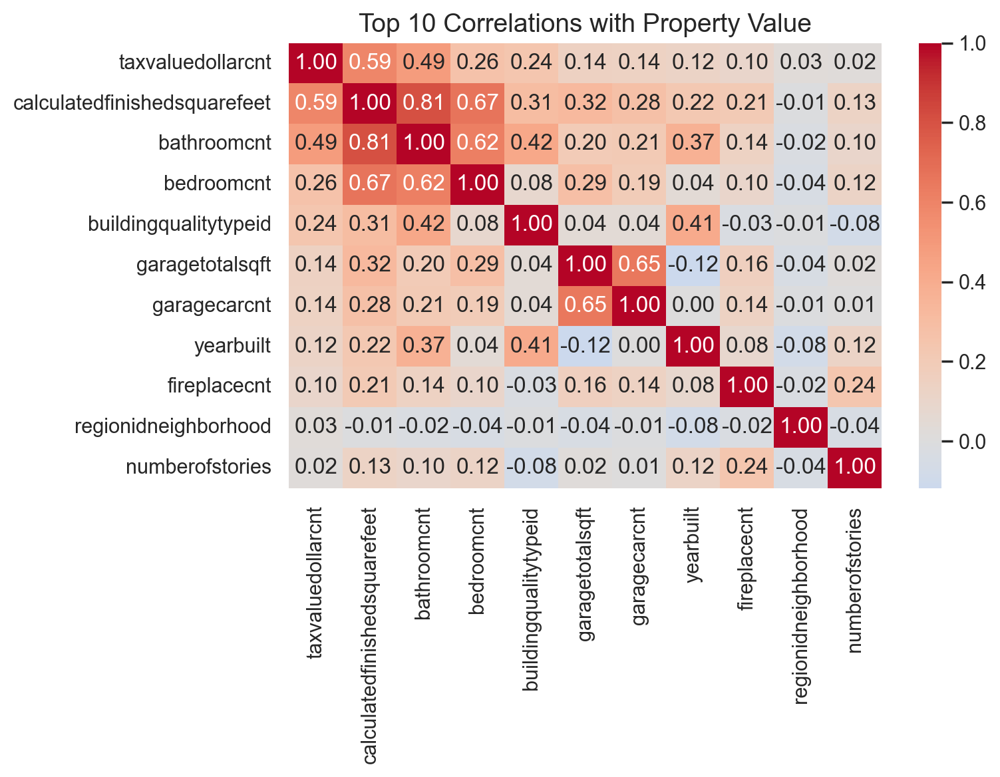

About Me
Hi, my name is Rain, and I am a Master’s student in Data Science at Boston University with expertise spanning data analysis, data science, machine learning engineering, and data engineering. I enjoy working across the entire data lifecycle, from designing and managing data pipelines, to conducting advanced statistical and analytical modeling, to developing and deploying machine learning systems in cloud environments. I am motivated to apply these skills in professional settings where rigorous analysis, reliable infrastructure, and impactful model deployment come together.
Projects
Python, scikit-learn, Surprise, XGBoost, Neural Collaborative Filtering, PyTorch, Hugging Face, NLTK, VADER, Streamlit
This project developed a hybrid recommendation system for Amazon electronics using a multi-stage architecture. Candidate products were generated with SVD (Surprise) for collaborative filtering and BERT embeddings for content similarity. Feature vectors were engineered by combining prediction scores, sentiment scores (VADER), and product metadata, which were then ranked with XGBoost. The system achieved Precision@5 = 0.88, Recall@5 = 0.86, and AUC = 0.89, and performance was further improved through ensembling with Neural Collaborative Filtering (PyTorch). Deployment was completed with a Streamlit app on Hugging Face Spaces, integrating MLOps practices to reduce latency by 20% and enabling real-time recommendation exploration.

 


Python, Pandas, scikit-learn, Random Forest, LightGBM, SHAP, Folium, AWS
This work involved processing the Zillow Kaggle dataset through exploratory data analysis (EDA), missing value handling, and the engineering of 200+ domain-driven features to enhance predictive accuracy. A variety of regression models were trained and tuned, including Linear, Ridge, Random Forest, and LightGBM, with cross-validation confirming that the Random Forest model achieved the strongest performance (R² = 0.874, MAE = 10.9k, RMSE = 271k, with 85% of predictions within 10k of actual values). To improve interpretability, SHAP explainability methods (beeswarm, dependence, waterfall) were applied to identify key drivers of property value. Additional geospatial insights were generated using Folium to visualize property trends across regions. The pipeline is being prepared for deployment as an interactive Streamlit app on AWS, enabling real-time property valuation and exploration.
     
Experience
Software Engineer, Data & Infrastructure (Contract)
07/25 - Current
Vivi Swim School
- Built serverless ETL pipeline using Gmail API, regex, and Firestore, processing 100+ emails/day with >99% parsing accuracy and reducing manual workload by 80%.
- Developed full-stack appointment platform (React + Firebase) handling 50+ daily queries under 2s latency with role-based filtering, enabling efficient scheduling for coaches/admins.
- Deployed ML/infra services on Google Cloud Run with Firebase CI/CD, cutting latency by 30% and improving reliability of production systems.
- Published cross-platform mobile app (React Native + Firebase Functions) to Apple App Store, improving user stability and engagement through continuous feature updates and bug fixes.
Research Assistant (Data Science & Analytics)
01/24 - 12/24
Levens Emotion and Cognition Lab
- Preprocessed and encoded 10k+ unstructured behavioral data entries from Twitter, transforming categorical/text responses into numeric values and analyzing them with a codebook to improve data quality.
- Conducted statistical data analysis and created interactive Excel visualizations to support Multilevel Structural Equation Modeling (MSEM) and causal inference, identifying key emotional predictors.
- Applied A/B testing, feature engineering, and data analysis in weekly research discussions with PI and PhD students, contributing to experimental design improvements.
Soft Skills
- Collaboration & Teamwork – friendly, approachable, and enjoy helping others succeed.
- Communication – able to explain technical concepts clearly to both technical and non-technical audiences.
- Time Management – skilled at balancing multiple projects and meeting tight deadlines.
- Adaptability – quick to learn new tools and adjust to changing project needs.
- Problem-Solving – approach challenges with a positive, solution-oriented mindset.